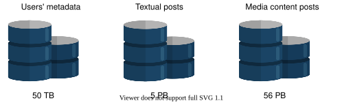
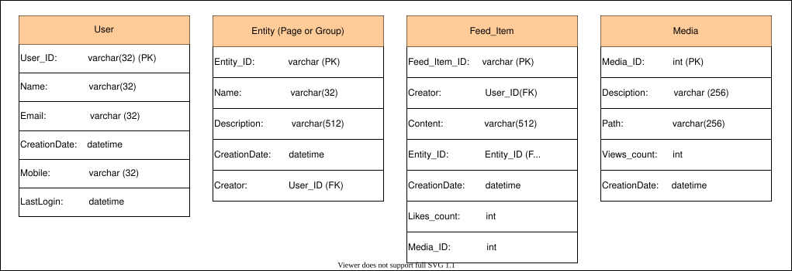
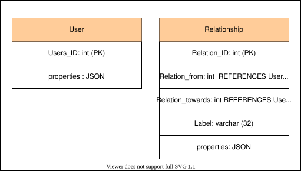
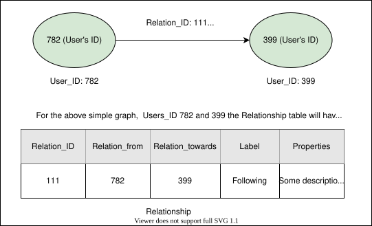

32. Design Newsfeed System
System Design: Newsfeed System
System Design: Newsfeed System
Learn about the basics of designing the newsfeed system.
We'll cover the following
What is a newsfeed?#
A newsfeed of any social media platform (Twitter, Facebook, Instagram) is a list of stories generated by entities that a user follows. It contains text, images, videos, and other activities such as likes, comments, shares, advertisements, and many more. This list is continuously updated and presented to the relevant users on the user’s home page. Similarly, a newsfeed system also displays the newsfeed to users from friends, followers, groups, and other pages, including a user’s own posts.
A newsfeed is essential for social media platform users because it keeps them informed about the latest industry developments, current affairs, and relevant information. It also provides them additional reasons to return and connect with a platform on a regular basis. Billions of users use such platforms. The challenging task is to provide a personalized newsfeed in real-time while keeping the system scalable and highly available.
This chapter will discuss the high-level and detailed design of a newsfeed system for a social platform like Facebook, Twitter, Instagram, etc.

How will we design the newsfeed system?#
We have divided the design of the newsfeed system into the following three lessons:
- Requirements: In this lesson, we’ll identify the functional and non-functional requirements. We’ll also estimate the resource requirements to provide a personalized newsfeed to billions of users each day.
- Design: We’ll discuss the high-level and detailed design of the newsfeed system in this lesson. We’ll also describe the API design and database schema for our proposed design. Moreover, this lesson will also help us to rank newsfeed to provide a better experience to users.
- Evaluation: In this lesson, we’ll evaluate the design of the newsfeed system based on the non-functional requirements. We’ll also take a quiz to assess our understanding of the design of the newsfeed system.
Let’s list down the requirements for designing our version of the newsfeed system.
Requirements of a Newsfeed System’s Design
Requirements of a Newsfeed System’s Design
Get introduced to the requirements and estimation to design a newsfeed system.
Requirements#
To limit the scope of the problem, we’ll focus on the following functional and non-functional requirements:
Functional requirements#
- Newsfeed generation: The system will generate newsfeeds based on pages, groups, and followers that a user follows. A user may have many friends and followers. Therefore, the system should be capable of generating feeds from all friends and followers. The challenge here is that there is potentially a huge amount of content. Our system needs to decide which content to pick for the user and rank it further to decide which to show first.
- Newsfeed contents: The newsfeed may contain text, images, and videos.
- Newsfeed display: The system should affix new incoming posts to the newsfeed for all active users based on some ranking mechanism. Once ranked, we show content to a user with higher-ranked first.
Non-functional requirements#
-
Scalability: Our proposed system should be highly scalable to support the ever-increasing number of users on any platform, such as Twitter, Facebook, and Instagram.
-
Fault tolerance: As the system should be handling a large amount of data; therefore, partition tolerance (system availability in the events of network failure between the system’s components) is necessary.
-
Availability: The service must be highly available to keep the users engaged with the platform. The system can compromise strong consistency for availability and fault tolerance, according to the PACELC theorem.
-
Low latency: The system should provide newsfeeds in real-time. Hence, the maximum latency should not be greater than 2 seconds.
Resource estimation#
Let’s assume the platform for which the newsfeed system is designed has 1 billion users per day, out of which, on average, 500 million are daily active users. Also, each user has 300 friends and follows 250 pages on average. Based on the assumed statistics, let’s look at the traffic, storage, and servers estimation.
Traffic estimation#
Let’s assume that each daily active user opens the application (or social media page) 10 times a day. The total number of requests per day would be:
500M×10=5 billions request per day ≈58K requests per second.
Storage estimation#
Let’s assume that the feed will be generated offline and rendered upon a request. Also, we’ll precompute the top 200 posts for each user. Let’s calculate storage estimates for users’ metadata, posts containing text, and media content.
-
Users’ metadata storage estimation: Suppose the storage required for one user’s metadata is 50 KB. For 1 billion users, we would need 1B×50KB=50TB.
We can tweak the estimated numbers and calculate the storage for our desired numbers in the following calculator:
Storage Estimation for the Users' Metadata.
| Number of users (in billion) | 1 |
| Required storage for one users' metadata (in KBs) | 50 |
| Total storage required for all users (in TBs) | f50 |
-
Textual post’s storage estimation: All posts could contain some text, we assume it’s 50KB on average. The storage estimation for the top 200 posts for 500 million users would be:
200×500M×50KB=5PB
-
Media content storage estimate: Along with text, a post can also contain media content. Therefore, we assume that 1/5th posts have videos and 4/5th include images. The assumed average image size is 200KB and the video size is 2MB.
Storage estimate for 200 posts of one user: (200×2MB×51)+(200×200KB×54)=80MB+32MB=112MB
Total storage required for 500 million users’ posts: 112MB×500M=56PB
So we’ll need at least 56PB of blob storage to store the media content.

Storage Estimation of Posts Containing Text and Media Content.
| Number of active users (in million) | 500 |
| Maximum allowed text storage per post (in KBs) | 50 |
| Number of precomputed posts per user (top N) | 200 |
| Storage required for textual posts (in PBs) | f5 |
| Total required media content storage for active users (in PBs) | f56 |
Number of servers estimation#
Considering the above traffic and storage estimation, let’s estimate the required number of servers for smooth operations. Recall that a single typical server can serve 8000 requests per second (RPS). Since our system will have approximately 500 million daily active users (DAU). Therefore, according to estimation in Back-of-the-Envelope Calculations chapter, the number of servers we would require is:
ServerRPSDAU =8000500M=62500 servers.

Servers Estimation
| Number of active users (in million) | 500 |
| RPS of a server | 8000 |
| Number of servers required | f62500 |
Building blocks we will use#
The design of newsfeed system utilizes the following building blocks:
- Database(s) is required to store the posts from different entities and the generated personalized newsfeed. It is also used to store users’ metadata and their relationships with other entities, such as friends and followers.
- Cache is an important building block to keep the frequently accessed data, whether posts and newsfeeds or users’ metadata.
- Blob storage is essential to store media content, for example, images and videos.
- CDN effectively delivers content to end-users reducing delay and burden on back-end servers.
- Load balancers are necessary to distribute millions of incoming clients’ requests for newsfeed among the pool of available servers.
In the next lesson, we’ll focus on the high-level and detailed design of the newsfeed system.
Design of a Newsfeed System
Design of a Newsfeed System
Learn how to design a newsfeed system.
We'll cover the following
Let’s discuss the high-level and detailed design of a newsfeed system based on the requirements discussed in the previous lesson.
High-level design of a newsfeed system#
Primarily, the newsfeed system is responsible for the following two tasks:
-
Feed generation: The newsfeed is generated by aggregating friends’ and followers’ posts (or feed items) based on some ranking mechanism.
-
Feed publishing: When a feed is published, the relevant data is written into the cache and database. This data could be textual or any media content. A post containing the data from friends and followers is populated to a user’s newsfeed.
Let’s move to the high-level design of our newsfeed system. It consists of the above two essential parts, shown in the following figure:

Let’s discuss the main components shown in the high-level design:
-
User(s): Users can make a post with some content or request their newsfeed.
-
Load balancer: It redirects traffic to one of the web servers.
-
Web servers: The web servers encapsulate the back-end services and work as an intermediate layer between users and various services. Apart from enforcing authentication and rate-limiting, web servers are responsible to redirect traffic to other back-end services.
-
Notification service: It informs the newsfeed generation service whenever a new post is available from one’s friends or followers, and sends a push notification.
-
Newsfeed generation service: This service generates newsfeeds from the posts of followers/friends of a user and keeps them in the newsfeed cache.
-
Newsfeed publishing service: This service is responsible for publishing newsfeeds to a users’ timeline from the newsfeed cache. It also appends a thumbnail of the media content from the blob storage and its link to the newsfeed intended for a user.
-
Post-service: Whenever a user requests to create a post, the post-service is called, and the created post is stored on the post database and corresponding cache. The media content in the post is stored in the blob storage.
API design#
APIs are the primary ways for clients to communicate with servers. Usually, newsfeed APIs are HTTP-based that allow clients to perform actions, including posting a status, retrieving newsfeeds, adding friends, and so on. We aim to generate and get a user’s newsfeed; therefore, the following APIs are essential:
Generate user’s newsfeed#
The following API is used to generate a user’s newsfeed:
generateNewsfeed(user_id)
This API takes users’ IDs, and determines their friends and followers. This API generates newsfeeds that consist of several posts. Since internal system components use this API, therefore, it can be called offline to pre-generate newsfeeds for users. The pre-generated newsfeeds are stored on persistent storage and associated cache.
The following parameter is used in this API call:
Parameter | Description |
| A unique identification of the user for whom the newsfeed is generated. |
Get user’s newsfeed#
The following API is used to get a user’s newsfeed:
getNewsfeed(user_id, count)
The getNewsfeed(.) API call returns a JSON object consisting of a list of posts.
The following parameters are used for this API:
Parameter | Description |
| A unique identification of the user for whom the system will fetch the newsfeed. |
| The number of feed items (posts) that will be retrieved per request. |
Storage schema#
The database relations for the newsfeed system are as follows:
-
User: This relation contains data about a user. A user can also be a follower or friend of other users.
-
Entity: This relation stores data related to any entity, such as pages, groups, and so on.
-
Feed_item: The data about posts created by users is stored in this relation.
-
Media: The information about the media content is stored in this relation.

We use a graph database to store relationships between users, friends, and followers. For this purpose, we follow the property graph model. We can think of a graph database consisting of two relational tables:
- For vertices that represent users
- For edges that denotes relationships among them
Therefore, we follow a relational schema for the graph store, as shown in the following figure. The schema uses the PostgreSQL JSON datatype to store the properties of each vertex (user) or edge (relationship).
An alternative representation of a User can be shown in the graph database below. Where the Users_ID remains the same and attributes are stored in a JSON file format.

The following figure demonstrates how graph can be represented using the relational schema:

Detailed design#
Let’s explore the design of the newsfeed system in detail.
As discussed earlier, there are two parts of the newsfeed system; newsfeed publishing and newsfeed generation. Therefore, we’ll discuss both parts, starting with the newsfeed generation service.
The newsfeed generation service#
Newsfeed is generated by aggregated posts (or feed items) from the user’s friends, followers, and other entities (pages and groups).
In our proposed design, the newsfeed generation service is responsible for generating the newsfeed. When a request from a user (say Alice) to retrieve a newsfeed is received at web servers, the web server either:
- Calls the newsfeed generation service to generate feeds because some users don’t often visit the platform, so their feeds are generated on their request.
- It fetches the pre-generated newsfeed for active users who visit the platform frequently.
The following steps are performed in sequence to generate a newsfeed for Alice:
- The newsfeed generation service retrieves IDs of all users and entities that Alice follows from the graph database.
- When the IDs are retrieved from the graph database, the next step is to get their friends’ (followers and entities) information from the user cache, which is regularly updated whenever the users database gets updated/modified.
- In this step, the service retrieves the latest, most popular, and relevant posts for those IDs from the post cache. These are the posts that we might be able to display on Alice’s newsfeed.
- The ranking service ranks posts based on their relevance to Alice. This represents Alice’s current newsfeed.
- The newsfeed is stored in the the newsfeed cache from which top N posts are published to Alice’s timeline. (The publishing process is discussed in detail in the following section).
- In the end, whenever Alice reaches the end of her timeline, the next top N posts are fetched to her screen from the newsfeed cache.
The process is illustrated in the following figure:

Point to Ponder
Question
The creation and storage of newsfeeds for each user in the cache requires an enormous amount of memory (step 5 in the above section). Is there any way to reduce this memory consumption?
The newsfeed publishing service#
At this stage, the newsfeeds are generated for users from their respective friends, followers, and entities and are stored in the form of <Post_ID, User_ID> in the news feed cache.
Now the question is how the newsfeeds generated for Alice will be published to her timeline?
The newsfeed publishing service fetches a list of post IDs from the newsfeed cache. The data fetched from the newsfeed cache is a tuple of post and user IDs, that is., <Post_ID, User_ID>. Therefore, the complete data about posts and users are retrieved from the users and posts cache to create an entirely constructed newsfeed.
In the last step, the fully constructed newsfeed is sent to the client (Alice) using one of the fan-out approaches. The popular newsfeed and media content are also stored in CDN for fast retrieval.

Point to Ponder
Question
How is the newsfeed of the friends and followers updated when a user creates a new post?
The newsfeed ranking service#
Often we see the relevant and important posts on the top of our newsfeed whenever we log in to our social media accounts. This ranking involves multiple advanced ranking and recommendation algorithms.
In our design, the newsfeed ranking service consists of these algorithms working on various features, such as, a user’s past history, likes, dislikes, comments, clicks, and many more. These algorithms also perform the following functions:
- Select “candidates” posts to show in a newsfeed.
- Eliminate posts including misinformation or clickbait from the candidate posts.
- Create a list of friends a user frequently interacts with.
- Choose topics on which a user spent more time.
The ranking system considers all the above points to predict relevant and important posts for a user.

Posts ranking and newsfeed construction#
The post database contains posts published by different users. Assume that there are 10 posts in the database published by 5 different users. We aim to rank only 4 posts out of 10 for a user (say Bob) who follows those five different users. We perform the following to rank each post and create a newsfeed for Bob:
- Various features such as likes, comments, shares, category, duration, etc and so on, are extracted from each post.
- Based on Bob’s previous history, stored in the user database, the relevance is calculated for each post via different ranking and machine learning algorithms.
- A relevance score is assigned, say from 1 to 5, where 1 shows the least relevant post and 5 means highly relevant post.
- The top 4 posts are selected out of 10 based on the assigned scores.
- The top 4 posts are combined and presented on Bob’s timeline in decreasing order of the score assigned.
The following figure shows the top 4 posts published on Bob’s timeline:

Newsfeed ranking with various machine learning and ranking algorithms is a computationally intensive task. In our design, the ranking service ranks posts and constructs newsfeeds. This service consists of big-data processing systems that might utilize specialized hardware like graphics processing units (GPUs) and tensor processing units (TPUs).
Note: According to Facebook:
“For each person on Facebook, we need to evaluate thousands of features to determine what that person might find most relevant to predict what each of those people wants to see in their feed.”
This implies that we need enormous computational power and sophisticated learning algorithms to incorporate all the features to get good quality feed in a reasonably short time.
Putting everything together#
The following figure combines all the services related to the detailed design of the newsfeed system:

In this lesson, we discussed the design of the newsfeed system, its database schema, and the newsfeed ranking system. In the next lesson, we’ll evaluate our system’s requirements.
Evaluation of a Newsfeed System’s Design
Evaluation of a Newsfeed System’s Design
Evaluate the newsfeed design with respect to its non-functional requirements.
We'll cover the following
Fulfill requirements#
Our non-functional requirements for the proposed newsfeed system design are scalability, fault tolerance, availability, and low latency. Let’s discuss how the proposed system fulfills these requirements:
-
Scalability: The proposed system is scalable to handle an ever-increasing number of users. The required resources, including load balancers, web servers, and other relevant servers, are added/removed on demand.
-
Fault tolerance: The replication of data consisting of users’ metadata, posts, and newsfeed makes the system fault-tolerant. Moreover, the redundant resources are always there to handle the failure of a server or its component.
-
Availability: The system is highly available by providing redundant servers and replicating data on them. When a user gets disconnected due to some fault in the server, the session is re-created via a load balancer with a different server. Moreover, the data (users metadata, posts, and newsfeeds) is stored on different and redundant database clusters, which provides high availability and durability.
-
Low latency: We can minimize the system’s latency at various levels by:
- Geographically distributed servers and the cache associated with them. This way, we bring the service close to users.
- Using CDNs for frequently accessed newsfeeds and media content.
Quiz on the newsfeed system’s design#
Test your understanding of the concepts related to the design of the newsfeed system with a quiz.
Which component is responsible for storing relationships between users, their friends, and followers?
A)
The users database
B)
The graph database
C)
The posts database
D)
None of the above
Summary#
In this chapter, we learned to design a newsfeed system at scale. Our design ranked enormous user data to show carefully curated content to the user for better user experience and engagement. Our newsfeed design is general enough that it can be used in many places such as Twitter feeds, Facebook posts, YouTube and Instagram recommendations, News applications, and so on.